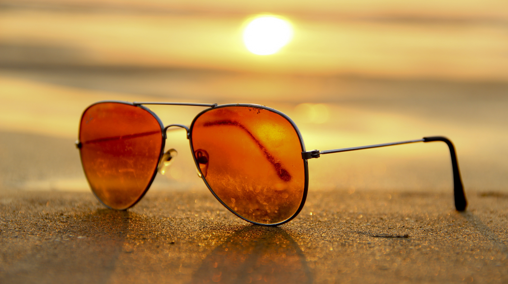

Student Life
7 Tips for a Productive Summer
By Enya Fang | Published Aug 7, 2021 1:19 p.m. PST

APs finished, final exams wrapped up, and schools let out for 3 delightful months. But with all this free time on your hands—not to mention a world still hampered by pandemic protocol—what is there left to do? The initial amusement of hours spent scrolling through Instagram feeds and Pinterest boards has worn out, and you're tired of binging video after video on an ever–expanding YouTube. Well, if you find yourself internally nodding along to any of the verdicts above—this article is for you. Here are 7 ways to maintain productivity over the last stretch of summer:
1. Enjoy the great outdoors. After nearly 10 months of diligently studying in classrooms (or one would hope), it's time to inhale some fresh air. Go grab a map and challenge yourself on a hike or enjoy the tranquil beauty of a scenic trail. Have a family BBQ, roast s'mores at night on a camping trip, book an outdoor–ed summer camp. Step outside and rest your eyes on the surrounding greenery between lengthy intakes of blue light. Nature is yours to enjoy.
2. Get together with family & friends. Make sure to spend some valuable time with those you love this summer. Perhaps this means going on shopping sprees and hosting picnics with friends, or gathering for family movie nights to rewatch everyone's favorite classic. But regardless, this is the time to put down your tablet and start a conversation with that long–time friend you may not have been keeping in touch with recently or a relative you haven't seen in some time. The internet may be a welcome companion, but the company of loved ones is one unrivaled.
3. Participate in community service initiatives. Volunteering is free, a great way to develop civic skills, and it demonstrates to colleges that you are willing to take action for issues that matter to you. Join a youth council, volunteer with a non–profit, host a bake sale, start an organization. Anything as simple as walking a neighbor's dog or babysitting a younger relative is enough to brighten somebody's day.
4. Study, but don't overstudy. It's good to review content from past school years to prepare for the fall, solidify both your language skills and Duolingo streak, and perhaps take an online course or two to get your brain up and running. But don’t over–exert yourself on piles of geometry workbooks if your mind is clearly in need of a break. Refreshing your headspace and taking care of your mental health should be a top priority over the summer.
5. Have a summer cleanout. Balancing academics and extracurriculars can be stressful at times, and it's easy to feel too tired or overworked for a full–blown room reorganization. But with all that now, it’s time to get to work. Sort through over–crowded closets and donate clothing you don't have much use for anymore. Give your room a new makeover. Organize that cluttered desk. There's nothing more stress–relieving than feeling in control of your daily life.
6. Try something new. Don't be afraid to explore or expand your interests; no summer is ever quite like the last. Experiment with a new sport, learn a new language, dye your hair that color you’ve been meaning to try. If you're someone that tends to play it safe, challenge yourself to step outside that comfort zone. Pick up a new hobby, test your culinary skills, attempt a DIY project. No one's ever too old for a new adventure.
7. Make your own bucket list. You've made it to the end of this one, but don't stop here. After all, you know you best. And whether these suggestions appear enticing or not, don't limit yourself nor your summer plans. But remember to always take good care of your health and well–being in whatever you choose to undertake.
Stay safe, and have a great summer everyone!